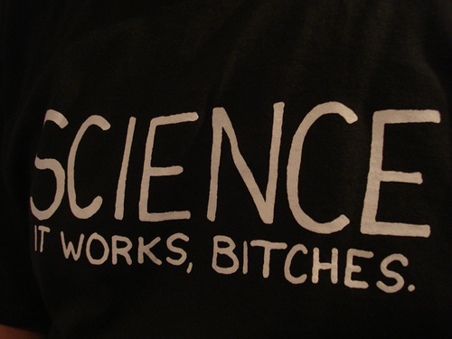

La Lucha Que Importa Ahora
“La ciencia es el gran antídoto contra el veneno del entusiasmo y de la superstición” – frase que me regalaron los alumnos de ICCI de la UTEM
Durante la campaña presidencial del 2008 el entonces candidato Barack Obama dijo:
“We've seen just a skyrocketing autism rate. Some people are suspicious that it's connected to the vaccines. This person included. The science right now is inconclusive, but we have to research it.”
“Hemos visto un aumento disparado de las tasas de autismo. Algunas personas sospecha que está conectado con las vacunas. Esta persona incluida. La ciencia en este momento no es concluyente, pero tenemos que investigarlo.”1
Con este comentario Barack Obama2 refuerza un error superado hace años y que está provocando un desastre de salud pública no sólo en Estados Unidos, sino que en muchos paises donde los padres están dejando de vacunar a sus hijos.
Todo este mito de que las vacunas causan autismo está basado en un desprestigiado, por fraudulento, “estudio”, publicado en 1998 por Andrew Wakefield, donde basándose en una población de 12 individuos establece una conexión entre vacunas y autismo. Aparte de que ha sido cuestionado su método y ha sido acusado de fraude elaborado, la ciencia además no ha podido reproducir sus resultados. En el año 2002 el New England Journal of Medicine publicó un estudio realizado sobre un 537 000 individuos, donde no se pudo encontrar ninguna relación entre autismo y vacunas.
Lamentablemente, la visión científica de la administración Obama sobre las vacunas ha causado estragos, puesto que en 2009 las políticas de su gobierno impidieron el uso de viales con multiples dosis para las vacunas que previenen el H1N1, una práctica usada en Europa y otros países. La razón era disminuir el uso del thimerosal, un preservante que según algunos grupos está vinculado a la aparición del autismo. Esto sumado a otras políticas provocó una disminución de vacunas antigripales y también de su efectividad3. Se estima que en 2010 en los Estados Unidos se infectaron de H1N1 unos 65 millones de personas, de las cuales 274 mil tuvieron que ser hospitalizadas, y murieron 12.470.4
¿Es el progresismo más ilustrado científicamente?
No se puede negar que es más frecuente encontrar en el conservadurismo una mayor oposición a la ciencia, sobretodo en el conservadurismo religioso norteamericano.
Negar la evolución, o el calentamiento global es parte habitual del discurso ultra conservador norteamericano.
Pero no son los únicos movimientos políticos que tienen posiciones anti científicas. Si les interesa el tema les recomiendo libros como The Republican War on Science. Pero el objetivo de este post es otro.
Dado que el progresismo apoya estos hechos de la ciencia se suele aceptar de que las posiciones progresistas son ilustradas en términos científicos. Algo que no es cierto.
Pareciera ser que la posición progresista es usar la ciencia cuando conviene a las ideas políticas e ignorarla totalmente cuando esta no cuadra con las mismas.
Amicus Plato, sed magis amica veritas
De acuerdo a Alex Berezow y Hank Campbell, en su libro The Science Left Behind, el pensamiento progresista con respecto a la ciencia se basa en cuatro mitos:
-
Todo lo natural es bueno
-
Todo lo que no sea natural es malo
-
La ciencia sin restricciones y el progreso nos destruirá
-
La ciencia sólo es relativa de todos modos
Los adherentes del primer mito se encuentran entre los que creen en la homeopatía, la medicina natural, o en que es mejor salir a trotar descalzos, porque así lo hacían nuestros antepasados, y por lo tanto es bueno, sin considerar que por algo esos mismos ancestros inventaron los zapatos.
El segundo mito es un corolario del primero. Según este cuando el hombre interfiere con algo entonces esto ya no es natural. Noten como los humanos, aceptados por el primer mito como naturales, han perdido repentinamente toda su “naturalidad”. Toda la inteligencia humana y sus habilidad se convierte en algo malo. Para los progresistas del segundo mito cualquier sustancia no natural, como una vacuna, aunque salve millones de vida se ha vuelto algo repugnante.
Para los progresistas del tercer mito la ciencia y la tecnología son inherentemente peligrosas. Por eso que estos se oponen a la energía nuclear o al uso de alimentos modificados genéticamente5. Estas personas exigen que una nueva tecnología para ser adoptada sea 100% segura, un estándar imposible de garantizar. Este tipo de personas atacan a los conservadores que no creen en el calentamiento global, pero atacan a la ciencia cuando esta entra en conflicto con sus ideas, acusándola de venderse a la gran industria, o de planear destruir el planeta.
Detrás de este tercer mito se esconde un paternalismo insoportable, la idea de que es posible construir una utopía dictada por su ética superior, ellos creen que saben lo que es bueno para todos nosotros. Si las políticas energéticas estuvieran a cargo de ellos sólo los ricos serían capaces de tener electricidad y lavadoras eléctricas.6
El último mito es el más grave de todos. La idea de que todo es relativo, esa peligrosa idea postmodernista. Para ellos la ciencia es sólo una opinión más. Este relativismo pone a las ciencias blandas al mismo nivel que las duras, la sociología o la economía tienen el mismo peso relativo que la física o la química. Vale lo mismo la opinión de un médico que recomienda una vacuna que lo que diga el Gurú de turno. Todo esto erosiona el valor de la investigación objetiva.

La lucha que importa
La lucha no debe ser entre izquierda vs derecha, conservadurismo vs progresismo, la lucha que importa ahora en este mundo, para evitar que se vaya por el desfiladero de la ignorancia, es la lucha por la ciencia.
Déjenme compartirles las palabras de Mark Anderson, citadas por David Brin, sobre el valor de la ciencia. Anderson dice esto tras presenciar el aterrizaje del Curiosity en Marte:
Ciencia es Realidad. En un momento en que una grande y creciente fracción de la población en U.S.A. no “cree” en ciencia (como una realidad objetivamente probable), o peor, ha caido en la idea de que la ciencia es una elección en el menú de la realidad, la NASA nos ha dado una razón concreate para entender que la ciencia funciona, y que la ciencia no es una opción, no es una teoría, no es un item del menú, sino que represente el mejor esfuerzo de las mentes humanas en entender y dirigir la realidad objetiva.
Aquellos en la Tierra que creen que la ciencia es un futbol político deberían tomar nota: no sólo están poniendo en peligro su reputación, están poniendo en peligro el bienestar de sus electores, y hoy en día, ponen en peligro al propio planeta.
Cualquier persona o partido que se burla de la ciencia debería ser considerado por lo que es: una amenaza al bienestar y el futuro de todos nosotros. Bajo la influencia de los propagandistas políticos, fanáticos religiosos engañados, e imperios de radio y televisión realmente peligrosos, demasiada gente ha sido llevada a creer que la ciencia es en cierta manera una opción a opinar.
La ciencia es tan opcional como la gravedad. La ilusión ignorante es la única opción real.
Es tiempo que todos los habitantes de la Tierra reconozcan el valor de la ciencia. Al hacerlo, encontraremos el piso común para estar de acuerdo en las otras cosas importantes.
NOTAS
-
El Senador McCain, el oponente de Obama en ese entonces, también compartía la misma percepción errónea sobre las vacunas, al decir (ver nota de arriba): “It's indisputable that [autism] is on the rise among children, the question is what's causing it,” he said. “There's strong evidence that indicates it's got to do with a preservative in the vaccines.” (Es indisputable que [el autismo] está en alza entre los niños, la pregunta es qué lo está causando. Hay fuertes evidencias que indican que tiene que ver con los preservantes en las vacunas). ↩︎
-
Junk Science Returns To White House, por Bill Frezza, noviembre 2009 ↩︎
-
He visto veganos anti transgénicos que comen felices empanadas de soya (soja) en Chile, lo más probable es que esa soya venga de Argentina donde el 97% es soya transgénica. ↩︎
-
Por favor vean este video de Hans Rosling TED: http://www.ted.com/talks/lang/es/hansroslingandthemagicwashingmachine.html ↩︎